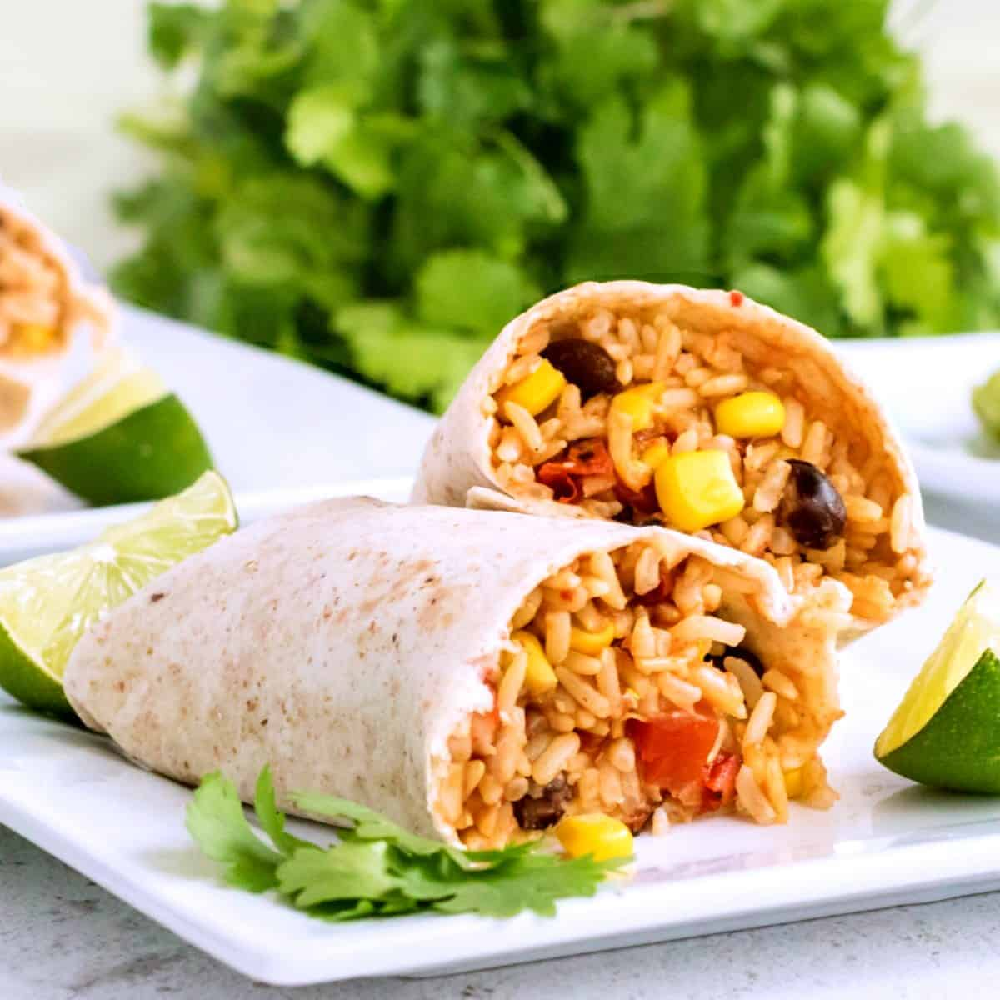

Slow Cooker Vegan Burritos

Description
These burritos have become a go-to recipe for me lately, as they're incredibly easy to make and they freeze well.
Whether you need something consistent to pack for lunch, or something on hand to heat up when you're in a hurry, these crockpot burritos are the perfect solution!
Ingredients:
- 1 cup uncooked brown or white rice
- 1/2 cup whole kernel corn
- 1/4 cup of your favorite salsa (I like using salsa verde)
- 28oz diced tomatoes, drained
- 28oz canned black beans, drained
- 2 chipotle peppers in adobo sauce, finely chopped
- 2 tablespoons taco seasoning
- 1 teaspoon cumin
- 1 teaspoon salt
- 10 burrito-style tortillas
Steps
- In your slow cooker, add rice, broth, corn, salsa, tomatoes, beans, peppers, and seasonings. Stir and cover.
- Cook on low 6-8 hours or on high for 3-4 hours. Be sure to stir halfway through cooking so the rice doesn't stick.
- Lay out your tortillas and place 1/3 to 1/2 cup on each tortilla. You can also add cheese if you'd like. Use your preffered burrito rolling technique.
- If freezing, simply wrap in plastic wrap and throw them in the freezer. Transfer to the fridge to thaw overnight before cooking if you want the easiest microwave experience.
- Enjoy!